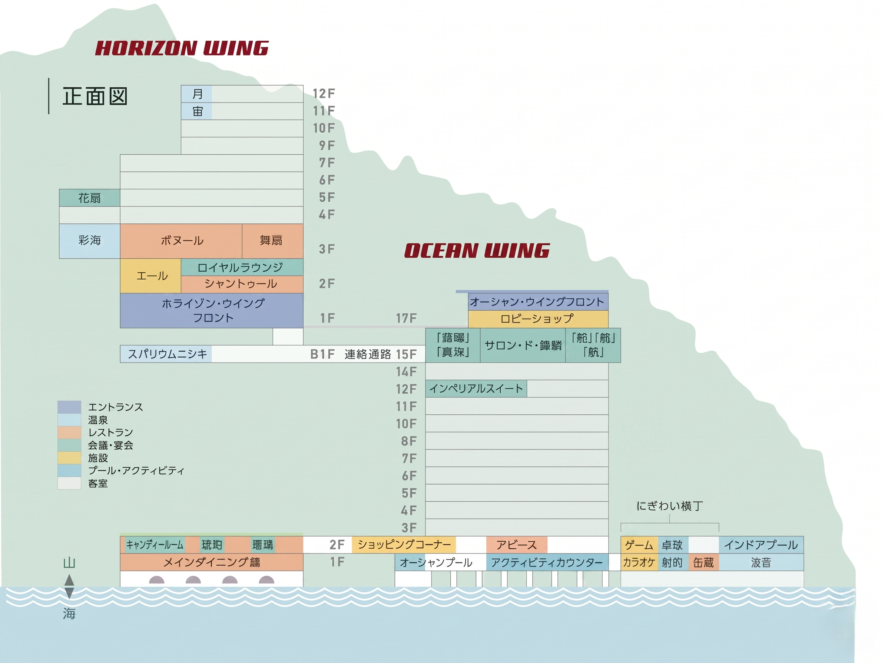
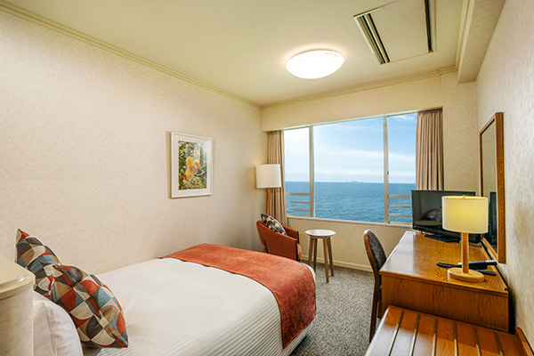
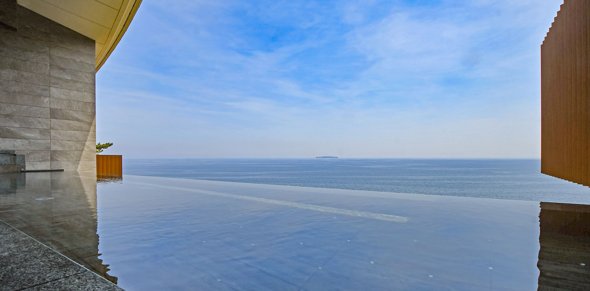
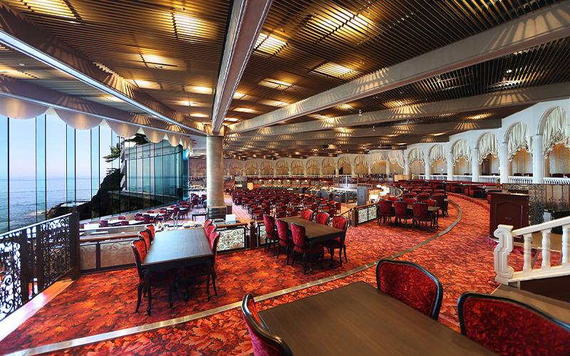
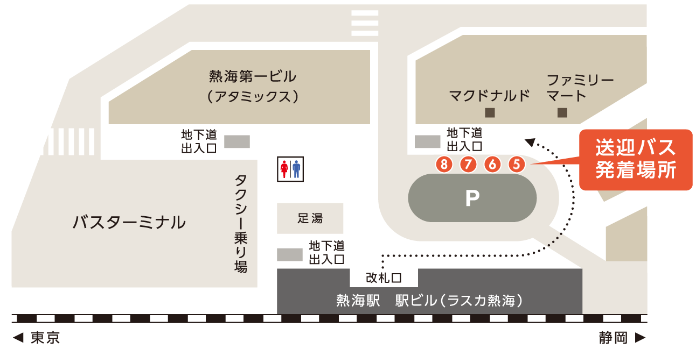
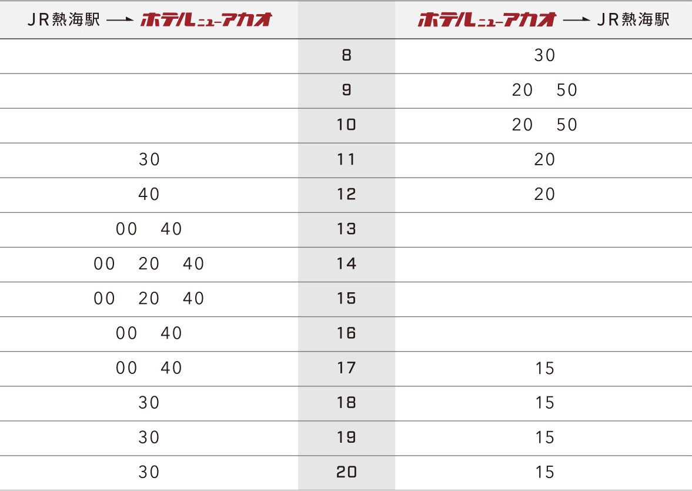

宿泊日程: 2026年8月2日～8月3日
料金: 41,079円
キャンセルポリシー:
・～ 6月23日 15:08: 全額返金
・6月23日 15:08 ～ 7月23日 23:59: 80%返金
・7月24日 0:00 以降: 返金不可
お部屋ホライゾン・ウイング スーペリアダブル（23㎡/禁煙/2名利用）
館内着上下セパレートタイプ（浴衣ではない）
ホライゾン・ウイングのフロントで手続き。
時間: チェックイン 15:00 ／ チェックアウト 10:00

【重要】タオルは部屋から持参。

食事の時間はチェックイン時に選択。（夕食は90分制）
熱海の定番土産が揃うショップ。
営業時間: 8:30～11:00 / 15:00～20:00 ＠ホライゾン2F
錦ヶ浦の絶景を見下ろせる庭園。散策や撮影スポットに最適。
営業時間: 9:00～17:00 ＠オーシャン2F（錦屋上）
好きな缶詰を選んで飲めるレトロなバー。アイスも提供。
営業時間: 15:00～23:00 ＠オーシャン1F
ビリヤードと無人ワインサーバー（有料）があるラウンジ。
営業時間: 15:00～23:00 ＠オーシャン2F
無料ウェルカムドリンク（セルフ式）を提供。ワインサーバーは有料。
営業時間: 9:00～23:00（ウェルカムドリンク 14:00～17:00） ＠ホライゾン2F
施設は主にオーシャン・ウイングに集約。
※オーシャン1Fカウンターで受付が必要。事前WEB可。
※WEB事前予約制。9:00～17:00（最終受付16:00 ※カルメ焼き15:00）
卓球: 8:00～23:00 (600円/30分) ＠ゲームコーナー
射的: 15:00～22:00 (500円) ＠ゲームコーナー
ビリヤード: 14:00～23:00 (2,200円/60分) ＠2階アビース
カラオケ: 15:00～24:00 (3,300円/1時間) ＠1階
カーナビ設定: 「静岡県熱海市熱海1993-65」
駐車場料金: 1泊1,000円（入庫から24時間まで）
【要注意】延長料金: 24時間を超えると1,000円/1時間が加算。
区間: JR熱海駅 ⇔ ホテル（約10分・予約不要・無料）
熱海駅乗り場: 改札を出て右手ロータリー ⑤⑥⑦⑧番（マクドナルド前）
※ホテル発は「ホライゾン・ウイング」発時刻（オーシャンは2分後）。

